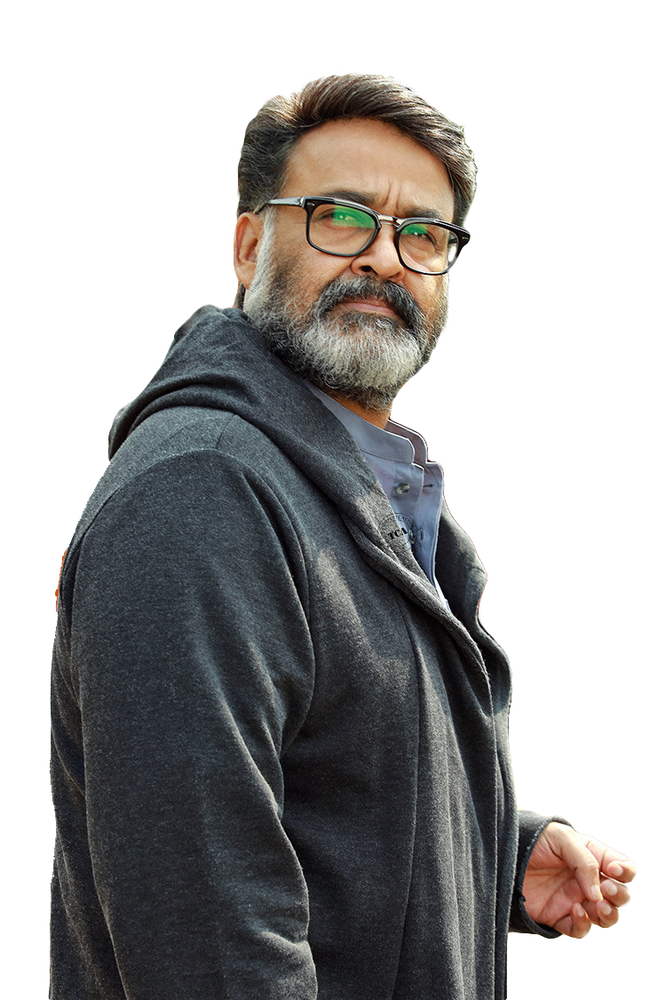

Mohanlal was born to Viswanathan Nair (father) and Santhakumari
(mother) in Pathanamthitta district of Kerala, in the southern part
of India on 21st May 1960. Starting his career with a classic
villain role, he has now become an outstanding actor of Malayalam
Cinema in Kerala. Without no doubt, Mohanlal is today's one of the
best actors India has ever produced. He is also rated one of the
most talented actors in India. His ranges of movies are enviable,
his comedy roles are incomparable and his unique style of dialogue
delivery is effortless. Not many actors can portray both comedy and
serious roles with the same ease. And with all these rare talents he
has received "Padma Shri" and "Padma Bhushan", nation's highest
civilian honors. He also won 5 National Film Awards, including Best
Actor twice for Bharatham (1991) and the highly acclaimed
Vaanaprastham (1999), as well as numerous other awards and honors.
He has reached this position with his hard work and devotion
to the movie industry. As far as his acting is concerned, it's been
acknowledged many times that he's the most gifted actor on the
Indian movie field.